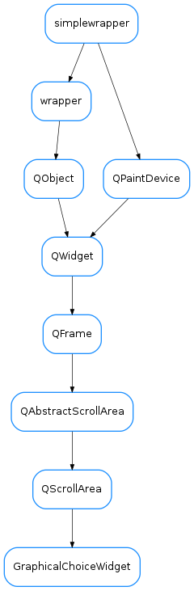

GraphicalChoiceWidget¶

-
class
GraphicalChoiceWidget(parent=None, designMode=False, choices=None, pixmaps=None, iconSize=128, defaultPixmap=None, horizontalScrollBarPolicy=0, verticalScrollBarPolicy=0)[source]¶ Bases:
PyQt4.QtGui.QScrollAreaA widget that presents a 2D grid of buttons
-
classmethod
getQtDesignerPluginInfo()[source]¶ Returns pertinent information in order to be able to build a valid QtDesigner widget plugin
The dictionary returned by this method should contain at least the following keys and values: - ‘module’ : a string representing the full python module name (ex.: ‘taurus.qt.qtgui.base’) - ‘icon’ : a string representing valid resource icon (ex.: ‘:/designer/combobox.png’) - ‘container’ : a bool telling if this widget is a container widget or not.
This default implementation returns the following dictionary:
{ 'group' : 'Taurus Widgets', 'icon' : ':/designer/taurus.png', 'container' : False }
Return type: :class:~`dict` Returns: a map with pertinent designer information
-
setChoice(row, col, text, pixmap=None, tooltip=None)[source]¶ sets the option for a given row,column coordinate in the grid
Parameters: - row (:class:~`int`) – row in the grid for this option
- col (:class:~`int`) – column in the grid for this option
- text (:class:~`str`) – name for this option
- pixmap (:class:~`QPixmap` or :class:~`None`) – If no valid pixmap is provided for a given choice, the default one will be used
- tooltip (:class:~`str`) – tooltip for this option (if None given, the text is used)
-
setChoices(choices, pixmaps=None)[source]¶ sets the available options
Parameters: - choices (:class:~`list` <:class:~`list`>) – a list of lists of strings to be used as choices names. The (possibly sparse) 2D array defined by the nested lists will be used to present the choices in a grid. The choice names will be used as keys for pixmaps
- pixmaps (:class:~`dict` <:class:~`str`, :class:~`QPixmap`>) – dictionary mapping the choices text to corresponding pixmap. If no valid pixmap is provided for a given choice, a default pixmap will be used
-
classmethod